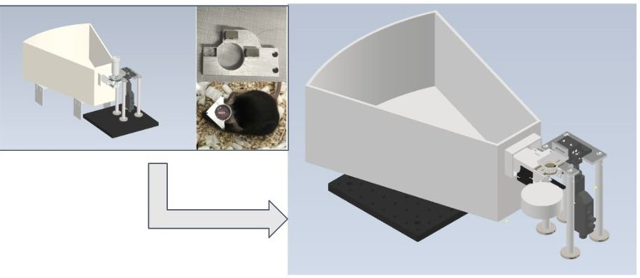

Chen Lab, Boston University · Engineering · 2021 → 2022
A home cage where mice learn to head-fix themselves
Many mouse experiments need the animal's head held still. Building on a mechanical head-fix design from Professor Ben Scott, I optimized the head-fix crown and designed a training module that uses a magnet to teach mice to fix their own heads in their home cage.
- Lab
- Chen Lab, BU
- When
- 2021 to 2022
- Tools
- LabVIEW, Arduino, Zaber actuator
- Use
- Training for two-photon imaging
The problem
What made it hard
Mice are widely used in neuroscience, and most experiments require head fixation. A well-trained person can head-fix a mouse by hand, but the process makes the mouse anxious and keeps a person involved at every step.
Manual training also sets the schedule. Someone has to put each mouse in, test the sensors and run every session, which limits efficiency. That is why we brought training into the mouse's home cage.
A look at the work
The design

My work
My role
Head-fix crown
The cage builds on a mechanical head-fix design from Professor Ben Scott. I helped optimize the crown that holds the head plate.
Magnetic training module
I designed a training module that uses a magnet to teach each mouse to bring its head plate into the holder.
Control
We mainly used LabVIEW to drive a Zaber linear actuator, along with an Arduino.
Challenges
Hardware and training
Hardware
The magnet was not strong enough to hold the mouse.
Training
Mice had to get used to the magnetic attraction.
Keep exploring
More of my work
- I analyze tremor patient data.Encora Therapeutics
- I analyze mouse brain architecture.PhD dissertation
- I analyze brain-heart connectivity.Undergraduate research
- I analyze synthetic human brain data.BCI hackathon, 2nd place
Engineering projects: Wearable blood pressure sensor